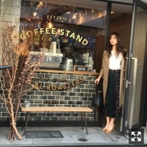
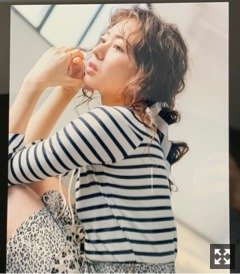

寒いのか暖かいのか、いやまだ寒いのか
みなさまこんにちは！
乃木坂46の
梅澤美波です！
天気が良い日の散歩はいいですよね〜
この前出かけてたらお天気雨が降って
綺麗な虹も見れましたよ〜
あ、道路の端っこに
ひとつだけポツンとたんぽぽが咲いてました
ほっこりしました
メールで写真送っておすそわけしました
小さな幸せです◎
昨日は名古屋にて個別握手会！
お越しくださった皆様
ありがとうございました！
寒い中沢山並んで下さり
本当にありがとうございます(；；)
今日のことはまた後日書きますね！
先日の全国握手会
ありがとうございました！
帰り道は遠回りしたくなる
キャラバンは眠らない
に参加させて頂きました
帰り道は何度も
パフォーマンスさせて頂いてきましたが
毎回心にグッとくるものがあります
全国握手会はフルサイズの披露！
個人的に2番の歌詞が物凄く好きでして、、
フルサイズでのパフォーマンスは
全国握手会が終わると中々無くなるので
とても貴重です！！
今週には名古屋、そして
今月末には大阪もありますので
皆様ぜひお越しください〜！
キャラバンは眠らない の
フルサイズでのパフォーマンスは初でした！
明るい曲調と前向きな歌詞が
なによりすごく好きだし、、
振り付けの中で
日奈子さんと桃子と
目を合わせるところがありまして。
決まり事ではなくて自然と
出来上がった場面なんですけどね、
二人の笑顔が物凄く好きなので。
無邪気に笑う姿が好きだし
いつも勝手に元気を貰ってるので( .. )
それがすごく嬉しい！
だからたくさん披露できる場が
あればよいなあと。
映像見返したら梅澤
二人のこと見てすごく笑顔でした！
ひなこさん、ももこ
ありがとうございます！
お花も沢山！
ありがとうございます！
毎回全握前は極度の緊張に襲われますが、、
色んな方が顔を見せに来てくれて
色んな言葉をくれるので
気づけば時間は過ぎています、
いつもありがとうございます
個握とは違って、その日の気分で
気軽にレーンを行き来できるので
わちゃわちゃしてて好きですよ、物凄く
色々な感想が聞けて嬉しかったです、
ちょっとしたことも見ててくれてるので
嬉しいですね、

with4月号発売中です！
新内姉さんも一緒です！
新内さん専属モデル
おめでとうございます(；；)♡♡
先月に続き呼んでいただき光栄です(；；)
OLさん、憧れがあるので撮影も毎回楽しくて
シーンや設定がある上での撮影なので
難しくもあり、毎回勉強になります！
そして同じく発売中のar4月号に
登場させて頂いおります！
何度か撮影でご一緒させて頂いている
スタイリストの安藤さんと
ロザリームーンのお洋服を着て
撮影させて頂きました！
安藤さんの組むお洋服が大好きなので
今回も圧倒的な可愛さのお洋服に包まれ
終始楽しい撮影でした！
撮影が決まった時に
未央奈さんが声をかけてくださって
とても嬉しかったです(；；)♡

ぜひ！
そしてAKB48さんの55枚目シングル
「ジワるDAYS」に収録されている
「必然性」「初恋ドア」に
参加させて頂いおります！
必然性は去年のFNS歌謡祭で
IZ4648として披露させて頂いた楽曲です！
すごく好きな楽曲で
映像をよく見返してたので、、
すごく嬉しいです！
そして初恋ドアは
坂道AKBの第三弾楽曲になっています！
乃木坂から
大園久保山下与田と参加させて頂きました！
ありがとうございます、
とても嬉しいです(；；)
心強かったし、何より、
だからこそ足を引っ張れないなと気を引き締めMV撮影に挑みました
今までの坂道AKBの楽曲とは
ガラッと変わり曲調もMVも歌詞も
すごく可愛く仕上がっています！
普段あまり交流することの無い４グループが
こうして同じ楽曲を歌唱でき
お互い刺激し合える場を設けて頂き
本当に有難く思います。
センターは我らが山下です！
逞しく可愛くキラキラな山下、
とても素敵でした、可愛かった(；；)
もう3月も後半ですね〜
あっという間すぎてびっくりしてます
暖かくなってきたと思ったら
また寒くなっての繰り返しで
服を決めるのに毎日苦労してます〜
厚着して出掛けてみたら
めちゃくちゃ暑かったり
ちょっと薄着で出てみたら
今度はめちゃくちゃ寒かったり（笑）
体調崩しやすい時期だと思うので
皆様気をつけてくださいね(；；)
それではまた更新します〜
いつかのおたまとのツーショット◎
おやすみなさい
Original：https://www.nogizaka46.com/s/n46/diary/detail/49517?ima=4946&cd=MEMBER